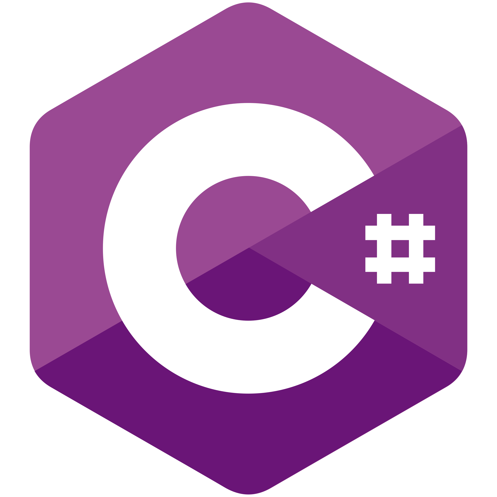

Socials
-
 Main Tumblr blog with reviews of movies, series and cartoons (yes anime too). Will probably die down sometime in 2022 because I burned out hard.
Main Tumblr blog with reviews of movies, series and cartoons (yes anime too). Will probably die down sometime in 2022 because I burned out hard. - Second Tumblr blog for current hyperfixations. The actualy active one now. Has a masterlist of important posts/links to writing.
-
 AO3 account where you can find most of the actual writing. Some of it is even good.
AO3 account where you can find most of the actual writing. Some of it is even good. -
 Pinterest accout with silly little pinboards for silly saved pictures. What else did you expect?
Pinterest accout with silly little pinboards for silly saved pictures. What else did you expect? -
 YouTube accout not an actual videoblog, but you can find playlists and channel recommendations there.
YouTube accout not an actual videoblog, but you can find playlists and channel recommendations there. - Pronouns page if you want to know more about my preferred referals that's your link.
-
 GitHub in case you wondered what my sophomore OOP tasks look like.
GitHub in case you wondered what my sophomore OOP tasks look like. -
 Telegram a.k.a. one of the fastest ways to contact me.
Telegram a.k.a. one of the fastest ways to contact me. - Email a.k.a. slower and more old-fashioned way to contact me.
About Me
Hi! My name is Teddy and you're on my personal website (sounds like something from the nineties? It sure does).
I'm a junior year student from Saint-Petersburg majoring in Internet Technologies and Programming. Here you can find all the links and information about me.
As you can probably tell I like writing and used to write reviews but currently I'm more interested in (fan)fiction and essays.
I watch a lot of different movies, series and cartoons and especially love sci-fi and fantasy. A few years ago I got into musical theatre and have been absolutely enamoured by it ever since (my favourite musical/rock opera is "Jesus Christ Superstar" and specifically the 2000 movie). I'm trying to read a lot even if I do not always manage - I read mostly non-fiction about biology and/or history but I also like fantasy and historical novels.
I like history in all its shapes and forms (to the point that everybody in high school used to tell me that I should be a historian :)) and the period I'm most interested in is XVI century Russia1.
I also like learning languages, even if I'm not especially successful in learning a lot of them.
My taste in music is chaotic, to say the least, but I like a lot of Russian rock and soundtracks to above mentioned musical theatre pieces.
Fandoms
- The Elder Scrolls (and specifically Oblivion and Morrowing) - videogames that feel like home.
- Star Trek - have watched almost all of it until HBO started releasing three new series every year.
- Avatar: The Last Airbander, Adventure Time, Steven Universe, Gravity Falls, Star VS The Forces of Evil, Over the Garden Wall - some cartoons (and their comics extensions) I love but never engaged with the fandom much.
- Bubble Comics - stuck on the first phase but I'm working on it.
- The Witcher - books and the series.
- Musical Theatre - I like too many musicals and operas to list them all here.
- Redacted and Hollow - current hyperfixations (audio storytelling).
Education
The ones that count are:- Physical-Technical High School my absolute beloved. Gave me probably the best possible high school experience and a great start. I graduated .
- ITMO University where I'm currently studying.
Languages
-
 Russian - native speaker;
Russian - native speaker; -
 English - C2 (supposedly, not officially evaluated);
English - C2 (supposedly, not officially evaluated); -
 German - B1 (barely).
German - B1 (barely).
Programming Languages
-
 Java (my programming mother tongue, if you will);
Java (my programming mother tongue, if you will); -
 C/C++ (which I hate);
C/C++ (which I hate); - C# (just a bit);
-
 Python (will soon get more of that on Machine Learning);
Python (will soon get more of that on Machine Learning); -
 Bash (will soon get more of that on Linux Administrating and I'm dreading it).
Bash (will soon get more of that on Linux Administrating and I'm dreading it).
Code Example
So that you know that I'm not lying about knowing any programming languages, here's a transaction class from a Banking System task from OOP class.
public abstract class Transaction {
static ArrayList transactions = new ArrayList();
protected static int ID = 1;
int id;
double summ;
boolean isCanceled = false;
abstract void undo() throws Exceptions.AlreadyCanceled;
static void undo(int id)
throws Exceptions.IncorrectIDTransaction,
Exceptions.AlreadyCanceled {
for (int i = 0; i < transactions.size(); i++) {
if (transactions.get(i).id == id) {
transactions.get(i).undo();
return;
}
}
throw new Exceptions.IncorrectIDTransaction();
}
@Override
public boolean equals(Object o) {
if (o == this) {
return true;
}
if (!(o instanceof Transaction)) {
return false;
}
Transaction c = (Transaction) o;
return id == c.id;
}
}
Links to writing I'm low key proud of
- Revenge Party
- the only multiple-chapters work which came out well and the characterizations are pretty good (or so I was told).
- Being Alive
- based on Sondheim's classic and I quite like how the wordplay and phrasigs work here.
- the only work written on somebody else's prompt (and also partly based on Queen's hit) and the prompt author was happy with it. Work with different perspectives is also done nicely.
Quote from "Prisoners of Power" by Strugatsky brothers, because I can and no one will ever scroll that far anyway
What an appalling state of affairs when you find yourself being tortured not by an enemy but by a bureaucrat. Take a look at my left arm. His Imperial Majesty's specialists sawed it off in three stages; and each order was accompanied by a lengthy official correspondence. Those butchers were just doing a disagreeable, boring, unrewarding job. While they were sawing off my arm, they cursed their wretchedly low pay. And I was terrified. I had to strain my willpower to keep from talking. And now... I can see how you hate me.
"Prisoners of Power" by A. and B. Strugatsky